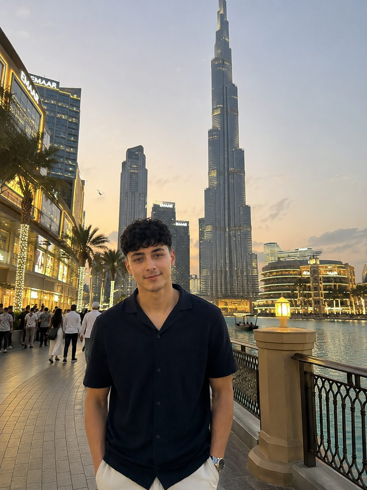

Gründer · Design
Matteo Cocetrone
Matteo verantwortet das Gestalterische: Look, Farben, Typografie und den roten Faden, der eine Seite zusammenhält. Er übersetzt, was deinen Betrieb ausmacht, in ein Design, das sofort nach dir aussieht – und nicht nach Baukasten.
Sein Anspruch: Jede Seite soll wirken, als wäre sie nur für dieses eine Geschäft gemacht. Keine Vorlage, der man ansieht, dass tausend andere sie auch benutzen.